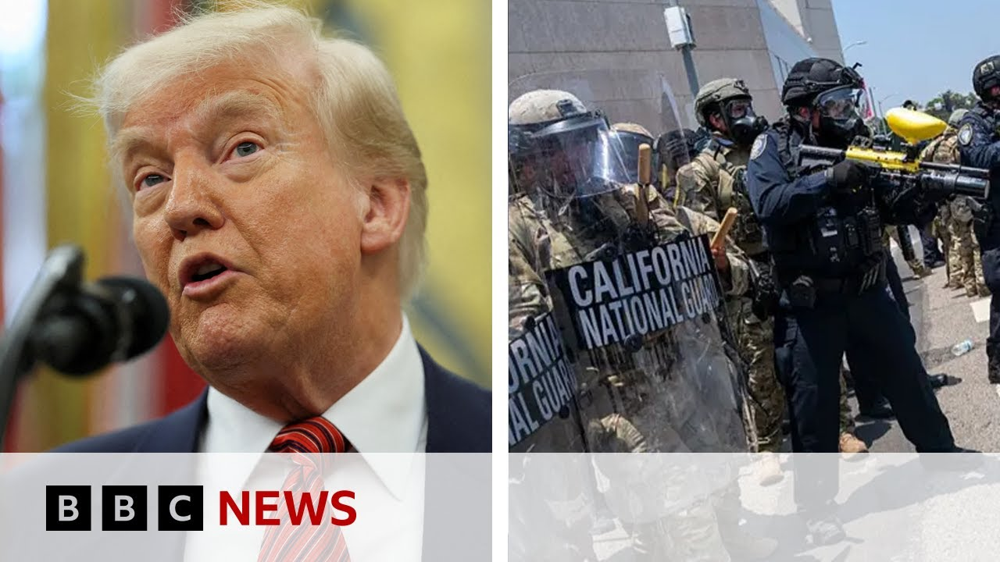

【加州州长起诉政府 特朗普为派遣国民警卫队至洛杉矶辩护 | BBC新闻】
Summary: Clashes erupted in Los Angeles after Trump urged a crackdown on protests, leading to arrests and deployment of National Guard troops, sparking a legal battle with California's governor.
摘要： 洛杉矶爆发冲突，特朗普要求镇压抗议活动，导致逮捕并派遣国民警卫队，引发与加州州长的法律纠纷。

⏱️ Estimated Reading Time: 15 min
📚 六级生词 📚 雅思生词 📚 托福生词 📚 GRE生词 📚 视频里的生词
News.
新闻。
We start in the US where there have been clashes on the streets of Los Angeles as President Trump urges a crackdown on demonstrators.
我们从美国开始报道，洛杉矶街头发生冲突，总统特朗普要求镇压示威者。
Police have ordered protesters to leave the downtown area, declaring it an unlawful assembly area.
警方命令抗议者离开市中心，宣布该地区为非法集会区。
While the unrest was triggered on Friday when immigration agents carried out raids on areas of the city with large Latino populations.
骚乱始于周五，移民局特工对拉丁裔人口密集的城区进行了突袭。
Immigration and Customs Enforcement, otherwise known as ICE, have made a 100,000 arrests across the country since President Trump's return to the White House.
移民和海关执法局（ICE）自特朗普重返白宫以来，已在全国逮捕了10万人。
Well, in response to the unrest in LA, the president sent around 2,000 National Guard troops to the city.
为应对洛杉矶骚乱，总统向该市派遣了约2000名国民警卫队士兵。
That's triggered a political row with California's Governor Gavin Nuome.
这引发了与加州州长加文·纽瑟姆的政治争端。
He says that he's suing the Trump administration for deploying the National Guard without his permission.
他表示，正起诉特朗普政府在未经其许可的情况下部署国民警卫队。
Well, here's what President Trump had to say when he was questioned about what's happening in Los Angeles a short while ago.
以下是特朗普总统稍早前被问及洛杉矶局势时的回应。
What does your intel tell you about these people causing all the problems in Oh, there are they people ISIS is trying to deport or are they professional agitators?
你的情报显示这些制造麻烦的人是ISIS试图驱逐的对象，还是职业煽动者？
The people that are causing the problem are professional agitators.
制造问题的人是职业煽动者。
They're insurrectionists.
他们是叛乱分子。
They're bad people.
他们是坏人。
They should be in jail.
他们应该被关进监狱。
Thank you.
谢谢。
Well, some journalists covering the demonstration say they've been targeted by the police.
一些报道示威活动的记者称，他们成为警方目标。
The BBC has been given this clip of Lauren Tomasi, who's a foreign correspondent for Australia's Channel 9 News as she's shot with rubber bullets.
BBC获得的视频显示，澳大利亚第九频道外籍记者劳伦·托马西被橡胶子弹击中。
Have a look.
请看。
Moving them on through the heart of LA.
驱散洛杉矶市中心的人群。
You just shot the You okay?
你刚被击中，没事吧？
I could hit you.
我可能会打中你。
Just one leg up there.
把一条腿抬起来。
Well, joining me now is our senior North America correspondent John Sudworth in Los Angeles and chief North America correspondent Gary Donahghue in Washington.
现在连线我们在洛杉矶的北美资深记者约翰·苏德沃思和华盛顿的北美首席记者加里·多纳休。
John, to you first.
约翰，先请你发言。
And what's the mood in LA this morning?
今早洛杉矶的气氛如何？
Uh, well, I'll just give you a little bit of a scene set, Mariam, as to where we are.
嗯，玛丽安，我先简单描述一下现场情况。
You can see the police cars behind me.
你可以看到我身后的警车。
Uh they are here guarding the entrance to this street.
他们在此守卫这条街道的入口。
Uh a very short distance away along there is the entrance to the detention center where some of the undocumented immigrants who've been arrested in these workplace raids here in this city over the last few days have been taken.
不远处是拘留中心入口，过去几天该市工作场所突袭中逮捕的无证移民被带往此处。
And this has been a focal point of the protest.
这里一直是抗议的焦点。
We saw the National Guard lined up outside that entrance yesterday.
昨天我们看到国民警卫队在该入口外列队。
uh big crowd of protesters here.
这里聚集了大批抗议者。
And then you can see on uh across the street here, this road is now open.
你可以看到街对面这条路现已开放。
But yesterday there were hundreds of protesters here.
但昨天这里有数百名抗议者。
Just a little way over there is the 101 uh one of uh LA's biggest highways that was blocked yesterday by the protesters.
不远处是101号公路，洛杉矶主要高速公路之一，昨天被抗议者封锁。
And this was the location of some of the most intense clashes between protesters and the police.
这里是抗议者与警察最激烈冲突的地点之一。
The streets, Mariam, are still littered with the debris uh from those clashes.
玛丽安，街道上仍散落着冲突留下的碎片。
I've just picked this up.
我刚捡到这个。
This is uh one of those rubber bullets.
这是一颗橡胶子弹。
There are hundreds of them lying around literally, which shows you how intense uh some of uh the the moments were yesterday.
地上有数百颗这样的子弹，可见昨天某些时刻多么激烈。
It's it's this kind uh of foam bullet, rubber bullet that uh hit the Australian reporter that you were speaking about there in that clip.
就是这种泡沫弹、橡胶弹击中了刚才视频中提到的澳大利亚记者。
Um and obviously they can do some damage.
显然它们能造成伤害。
another uh media uh member of the media uh a British photographer uh needed emergency surgery after being hit by one of these yesterday.
另一位媒体成员，一名英国摄影师昨天被击中后需紧急手术。
It was left embedded in his thigh and he needed it removed.
子弹卡在大腿里需取出。
So that gives you some sense of how volatile and how dangerous these situations can become.
由此可见局势可能变得多么动荡和危险。
But at the moment uh it is very calm.
但目前非常平静。
There are more protests planned uh as we get into the early part of this afternoon and we are told uh that there are something now like 150 people have been arrested in these protests since they began on Friday.
今天下午早些时候计划有更多抗议活动，据悉自周五以来已有约150人被捕。
John, thank you very much indeed for that.
约翰，非常感谢你的报道。
Well, let's cross live now and speak to Gary Odonahue in Washington.
现在连线华盛顿的加里·奥多纳休。
And Gary, just talk me through what we've heard from President Trump today because he earlier said that uh he's rightfully stepped in to in his words restore law and order because in his words again of Gary Nuome's uh leadership.
加里，请解读特朗普总统今天的表态，他早前称自己合法介入以"恢复法律与秩序"，并再次批评加里·纽瑟姆的领导。
Any more reaction from the president this afternoon?
总统今天下午有进一步回应吗？
Yeah, again he's uh he's suggested that the people responsible for the violence are uh professional agitators.
是的，他再次表示暴力事件的责任人是职业煽动者。
as he says they should be in jail.
他说这些人应被监禁。
Uh we don't know uh who has been arrested or we don't have any in details of them at this stage from the LAPD.
我们尚不清楚具体逮捕对象，目前未获洛杉矶警方详细名单。
So uh I'm not sure where he's getting that from.
不确定他的消息来源。
He was also asked whether Gavin Newsome ought to be arrested by the Homeland secretary and he said I would.
当被问及国土安全部长是否应逮捕加文·纽瑟姆时，他回答"我会"。
uh and that is because uh he believes uh and they believe that Gavin Newsome and the mayor of Los Angeles have stood in the way uh of them trying to uh implement this uh immigration clampdown this uh enforcement action uh and they believe that is you know some kind of offense.
因为他认为纽瑟姆和洛杉矶市长阻碍了移民执法行动，构成某种罪行。
Now the governor himself uh over the weekend when this was mooted said said uh bring it on.
州长本人在周末听闻此说法时回应"放马过来"。
Uh and they themselves as you mentioned earlier are suing uh the administration taking them to court for the actions of bypassing them in order to to federalize the National Guard.
正如你之前提到的，他们正起诉政府绕过州政府联邦化国民警卫队的行为。
Okay Gary, thank you very much indeed for that.
好的加里，非常感谢。
So, let's talk a little bit more about the National Guard and their role here and why this decision by the president is so controversial.
下面深入讨论国民警卫队的作用及总统决定引发争议的原因。
Let's cross live and speak to retired major general William Enyard.
现在连线退役少将威廉·恩亚德。
He spent 30 years with the National Guard in Illinois.
他曾在伊利诺伊州国民警卫队服役30年。
And you're also a former Democratic Congressman.
您也是前民主党国会议员。
It's so good to talk to you.
很高兴与您对话。
Thank you so much for joining us.
感谢参与节目。
And if I can ask you first of all for your reaction to this decision by the president to deploy the National Guard.
首先请问您对总统部署国民警卫队决定的看法。
Well, essentially what the president has done here is abandoned the playbook.
本质上总统摒弃了既定程序。
You know, the National Guard has been uh uh performing these kinds of missions for decades now.
国民警卫队执行此类任务已有数十年。
And as a result of our experiences, uh we've developed a playbook on how to do this.
根据经验我们已形成操作规范。
Uh the first thing that happens is that the local chief executive, whether it be a mayor or a county supervisor, uh and who has the eyes on the ground, so to speak, uh makes the determination whether or not he he or she has adequate resources to handle uh the problem.
首先应由当地行政长官（市长或县主管）评估是否具备足够资源应对问题。
Uh if they do not have the adequate resources, then they elevate the situation to the governor of the state uh and request the assistance of the National Guard.
若资源不足，再上报州长请求国民警卫队支援。
um that has that process has worked for decades.
该流程已有效运作数十年。
Uh Mr. Trump has unfortunately abandoned that process and sitting uh 3,000 miles away in Washington DC has seized the moment uh to uh take control of the California National Guard and order them in.
特朗普总统却放弃该流程，从3000英里外的华盛顿直接接管加州国民警卫队。
And does this set a precedent?
这会成为先例吗？
And if so, uh what could the consequences of that be?
若如此可能产生什么后果？
Well, I I don't think it sets a precedent.
我认为这不会成为先例。
the uh Lyndon, President Lyndon Johnson did this back in 1965, but it has been uh more than 60 years since it was last used.
林登·约翰逊总统1965年这样做过，但距今已60多年。
Um the uh it's unfortunate and it shouldn't be done because uh both the the local chief executive, the mayor uh as well as the governor of state say there is no problem.
这很不妥，因为地方和州政府均表示没有问题。
In fact, even Mr. Trump's uh Department of Homeland Security spokesperson stated there were only about 800 demonstrators.
事实上特朗普政府的国土安全部发言人称仅有约800名示威者。
A little more than the mayor said.
比市长说的略多。
The mayor said 300, but 800 demonstrators is hardly uh a large enough problem to call in the National Guard.
市长称300人，但800人远不足以动用国民警卫队。
So, was he wrong to do that, do you think, President Trump?
那么您认为特朗普总统做错了吗？
Well, I think he is.
是的。
I think it's a misuse of a of a wonderful force.
这是对优秀部队的滥用。
Uh the National Guard is trained to handle uh uh natural disasters and is trained to respond as a combat force for the United States in the event of a national emergency.
国民警卫队受训应对自然灾害和国家紧急状态时的作战任务。
Uh but we're trained for forest fires and floods and tornadoes and blizzards.
我们接受山火、洪水、龙卷风和暴风雪应对训练。
Um the National Guard only gets about four hours of uh civil disturbance training in a year.
国民警卫队每年仅接受约4小时骚乱处置训练。
Uh this hardly uh qualifies them to to really handle these types of things.
这难以使他们胜任此类任务。
Uh as compared to the local police forces which deal with this sort of thing every day.
地方警察日常处理此类事件更有经验。
So what could the consequences be?
可能产生什么后果？
I mean there's a lot of fear on the streets of LA.
洛杉矶街头充满恐惧。
I've been hearing from our correspondents on the ground.
据现场记者反馈。
Uh people are worried about what the National Guard could mean and what could happen over the coming days.
民众担忧国民警卫队的影响及未来几天局势。
Well, I hope they have nothing to worry about from the National Guard.
希望民众无需担忧国民警卫队。
The National Guard um is unlikely to take any kind of uh aggressive violent action towards demonstrators.
国民警卫队不太可能对示威者采取暴力行动。
uh the uh the National Guard uh I would hope will be used more as simply a security force to protect uh federal buildings uh and provide logistic support for uh the uh other uh police agencies on the ground.
希望其仅作为安保力量保护联邦建筑，并为地面警力提供后勤支持。
Uh so uh I would anticipate that the guard would not uh in any way uh create a problem for
因此预计警卫队不会制造任何问题。
Okay.
好的。
Okay.
好的。
Well, Major General William Entart, it's so good to talk to you.
威廉·恩塔特少将，感谢对话。
Thanks so much for taking the time to join us.
感谢抽空参与。
And California Governor Gavin Nuome has been speaking to our partners uh NBC in the last uh time or so.
加州州长加文·纽瑟姆稍早前接受NBC采访。
Let's have a listen to what he had to say.
请听他的表态。
Tom Holman and the borders are said to me yesterday he he did not rule out literally arresting you nor Mayor Bass if you interfere in his yet.
汤姆·霍尔曼昨天告诉我，若你们干预，他不排除逮捕你或巴斯市长。
He's a tough guy.
他是个硬汉。
Why doesn't he do that?
为何不动手？
He knows where to find me.
他知道在哪找到我。
But you know what?
但你知道吗？
Lay your hands off four-year-old girls that are trying to get educated.
别碰那些想上学的四岁女孩。
Lay your hands off these poor people just trying to get live their lives, man.
别打扰这些只想生活的可怜人。
Trying to live their lives, paying their taxes, been here 10 years.
他们在此生活十年，依法纳税。
The fear, the horror.
恐惧与恐怖。
The hell is this guy?
这家伙算什么？
Come after me.
来抓我啊。
Arrest me.
逮捕我。
Let's just get it over with.
来个痛快。
Tough guy.
硬汉。
You know, I don't give a damn.
我根本不在乎。
But I care about my community.
但我在乎我的社区。
I care about this community.
在乎这个社区。
The hell are they doing?
他们到底在干什么？
These guys need to grow up.
这些人需要成熟点。
They need to stop and we need to push back and I'm sorry to be so clear but uh that kind of bloiating is exhausting.
他们必须停止，我们必须反击。抱歉直言，但这种虚张声势令人疲惫。
So Tom, arrest me.
所以汤姆，逮捕我吧。
Let's go.
来吧。
Okay.
好的。
Well, that's Gavin Newsome's reaction on NBC.
这是加文·纽瑟姆在NBC的回应。
This is the BBC's live page.
这里是BBC实时页面。
It's being updated minuteby minute.
正每分钟更新。
And if you use the QR code on your screen, it will take you here where you can read the very latest on the situation, not only on the streets of Los Angeles, but also what is happening politically in Washington as
扫描屏幕二维码可查看洛杉矶街头和华盛顿政局的最新动态。